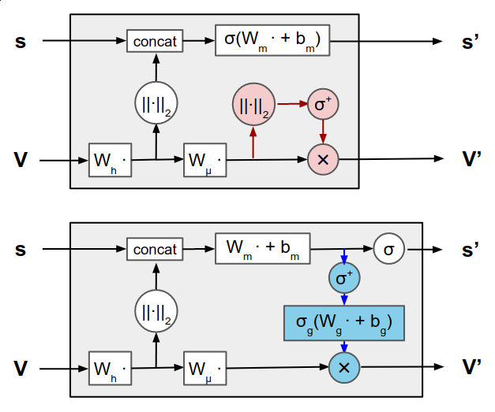

by Synthesized Solutions
Machine learning is increasingly applied to molecular analysis for tasks such as protein design, model quality assessment, and ablation studies. These techniques can help us better understand the structure and function of proteins, which is useful for many medical applications, such as drug discovery. Convolutional Neural Networks (CNNs) and Graph Neural Networks (GNNs) are two types of machine learning models that are particularly well-suited for analyzing molecular data. CNNs can operate directly on the geometry of a structure and GNNs are expressive in terms of relational reasoning.
Proteins are complex biomolecules with a unique three-dimensional structure that is critical to their function and modeling the interactions between non-adjacent amino acids can be challenging. Both CNNs and GNNs are typically translation invariant or equivariant, but these properties cannot be guaranteed for rotations in typical implementations. Formally, we can define invariance and equivariance as follows:
ParseError: KaTeX parse error: Expected 'EOF', got '&' at position 38: …Invariance:} &̲& f(g\\cdot x) …
In order to take more geometric information into account, Jing et al. (2020) propose a method that combines the strengths of CNNs and GNNs to learn from biomolecular structures. Instead of encoding 3D geometry of proteins, i.e. vector features, in terms of rotation-invariant scalars, they propose that vector features be directly represented as geometric vectors in 3D space at all steps of graph propagation. They claim this approach improves the GNN's ability to reason geometrically and capture the spatial relationships between atoms and residues in a protein structure.
This modification to the standard GNN consists of changing the multilayer perceptrons (MLPs) with geometric vector perceptrons (GVPs), see also Figure 1 (top). The GVP approach described in the paper is used to learn the relationship between protein sequences and their structures. GVPs are a type of layer that operates on geometric objects, such as vectors and matrices, rather than scalar values like most neural networks. This makes GVPs well-suited to tasks that involve analyzing spatial relationships, which is highly important for protein structures. To show this improvement, the model is evaluated on various tasks from the Atom3D dataset (Townshend et al. 2020) described in Section 3.
In GVP-GNNs, node and edge embeddings are represented as tuples of scalar features and geometric vector features. The message and update functions are parameterized by geometric vector perceptrons, which are modules that map between the tuple representations while preserving rotational invariance. In a follow-up paper Jing et al. (2021) extend the GVP-GNN architecture to handle atomic-level structure representations, which allows the architecture to be used for a wider range of tasks.
In the original GVP-GNN architecture, vector outputs are functions of vector inputs, but these output vectors do not depend on the scalar inputs. This can be an issue for atomic-level structure graphs where individual atoms may not necessarily have an orientation. To address this issue, Jing et al. (2021) propose vector gating as a way to propagate information from the scalar channels into the vector channels, see Figure 1 (bottom). This involves transforming the scalar features and passing them through a sigmoid activation function to “gate” the vector output, replacing the vector non-linearity. In their paper they note that the equivariance of the vector features is not affected, because the scalar features are invariant and the gating occurs row-wise. They conclude that vector gating can help improve the GVP-GNN's ability to handle atomic-level structure representations and therefore machine learning on molecules.
Lastly, as mentioned, the equivariance to rotation of the models is very important and in order to test this property, the original authors have tested the GVP to check if the models behave the same when the conditions are rotated randomly. We can summarize this behaviour into two points, namely:

Figure 1. The original geometric vector perceptron (GVP) reported by Jing et al. fr0m 2020 is shown in the top diagram, while the updated GVP provided in Jing et al. from 2021 is shown in the bottom diagram. Information can now go from the scalar channels to the vector channels due to the replacement of the original vector non-linearity (in red) with vector gating (in blue). Row- or element-wise operations are indicated by circles. The main module of the equivariant GNN is the modified GVP.
The current model of the authors manages to combine the strengths of CNNs and GNNs while maintaining the rotation invariance, which it achieves using a model of low computational burden. The invariance for rotation is essential because the orientation of the molecule does not change the characteristics of the molecule. However, the combination of the molecules into a protein does depend on the orientation of (the linkage between) the molecules, e.g. the shape of the protein does affect the characteristics of the protein. This is a weakness in the otherwise strength of the model. In the follow-up paper, the authors introduced vector-gating to retain the rotational equivariance of vector features, but this version of the GVP can only exchange information between scalar and geometric features using scalar values (either the norm or using gating). We aim to improve the expressiveness of this model by improving the sharing between scalar and geometric features to incorporate orientation into the scalar features.
To formalize the rotation invariance, take the transformation of the scalar features in the GVP module such that
where is the weight matrix of the linear layers, is a bias vector, is some element-wise non-linearity, are the geometric features and their norm is taken row-wise. is invariant under rotations if, for some unitary rotation matrix , the rotated geometric features give the same as defined above. This trivially holds, since
Our objective is to enhance the performance of the GVP layers by removing the dependency of scalar features on the orientation of geometric features. Currently, in the GVP layers, the orientation-related information is lost when the norm of the geometric features is taken. To evaluate the Atom3D tasks, a model is employed that solely considers the scalar features of all nodes as output, neglecting the explicit consideration of orientation. This limits the expressiveness of the model.
We hypothesize that utilizing steerable basis for the scalar features as output in the model will provide a more expressive representation of the data's geometry. By incorporating steerable basis, effective communication between scalar and geometric features, including orientation, can be achieved, going beyond just considering the norm.
The authors of the original paper use eight tasks from Atom3D (Townshend et al. 2020) to test the quality of their model. These tasks are LBA, SMP, MSP, PSR and RSR. Five of these tasks have the following definitions:
“Ligand Binding Affinity” is a regression task with the goal to predict the binding affinity of a protein-ligand complex. This complex describes the binding interactions between a small molecule ligand and its target protein. These interactions can result in gain or loss of functional effects that can be utilized for a beneficial medicinal effect. Predicting and determining the intermolecular forces that affect binding between a protein and potential ligand therefore plays an important role in optimizing the drug discovery process. In this task, the goal of the model is to predict the binding affinity between the biomolecule and its ligand. Here, the affinity is described as the negative logarithm of the equilibrium dissociation constant , which serves as a robust measure for indicating the presence of strong binding interactions. (Liu et al., 2015; Wang et al., 2004)
“Small Molecule Properties” is a regression task that predicts the physiochemical properties of a small molecule structure, which can be used to evaluate the suitability of a molecule for drug discovery applications. Predicted properties include electronic properties (orbital energies), thermodynamic properties (enthalpy), and energetic properties (internal energy). (Ramakrishnan et al., 2014; Ruddigkeit et al., 2012)
“Mutation Stability Prediction” is a classification task with the goal to predict whether a point mutation is stablizing. A mutated protein structure is generated by introducing a single point mutation, meaning that one amino acid residue of the original protein is altered. By evaluating the post-mutation stability of the protein, information can be gathered on whether the replaced residue plays a role in stabilizing the native conformation of the protein or not. Identifying mutations that stabilize a protein’s interactions is a key task in designing new proteins. Experimental methods for investigating point mutations are labor-intensive, which motivates the development of effective computing tools. (Jankauskaitė et al., 2018)
“Protein Structure Ranking” is a regression task that predicts the global distance test (GDT_TS) of the true structure and each of the predicted structures submitted in the previous 18 years of the Critical Assessment of protein Structure Prediction (CASP). One of the main workhorses of the cell are proteins; understanding, and designing for, their function depends on understanding their structure. (Kryshtafovych et al., 2019)
“RNA Structure Ranking” is a regression task that aims to predict the root mean squared deviation (RMSD) from the ground truth structure to candidate RNA models. Structural information on the three-dimensional orientation of RNA is relatively low compared to proteins. Developing tools that can help predict their conformation can therefore prove to be essential in future research. The candidate models are obtained through the FARFAR2 and the RNA Puzzle Challenge (Cruz et al., 2012; Watkins et al., 2020)
Since the code of the paper was given to us, it was relatively easy to reproduce the results of the original paper. We reproduced all the tasks that our cluster could handle. Once we had all the results, we could build upon a task that was correctly reproduced. We only use tasks that are close to the original papers because only these task can give a clear and correct indication if our contribution improves the model.
Our results were as follows:
| Task | Metric | Jing et al. | Ours |
|---|---|---|---|
| LBA (Split 30) | RMSE | 1.594 | 1.598 |
| LBA (Split 60) | RMSE | - | 1.641 |
| SMP | MAE | 0.049 | 0.144 |
| SMP | MAE | 0.065 | 0.0058 |
| SMP | MAE | 0.143 | 0.0259 |
| MSP | AUROC | 0.680 | 0.672 |
| PSR | global | 0.845 | 0.854 |
| PSR | mean | 0.511 | 0.602 |
| RSR | global | 0.330 | 0.331 |
| RSR | mean | 0.221 | 0.018 |
From these results we conclude that the LBA task is close enough to the original paper that our reproduction is successful. Although MSP is close enough to use for the adaption as well, training the model for this task took nearly 10 hours, for this reason we decided to focus only on LBA. The reproductions for the PSR and RSR tasks have a similar global , however, the mean deviates significantly and we do not use this task for further research. The SMP task does not show reproduced results.
This section is mostly based on the paper “Geometric and Physical Quantities improve Equivariant Message Passing” (Brandstetter et al., 2022).
Steerable features are vectors that behave equivariant under transformations parameterized by . This work uses steerable features, denoted with a tilde (). The type of this vector indicates the type of information it holds, where the relevant features for this work are type- , scalar features, and type- , 3D euclidean vectors (with , and components). More general, a type- steerable feature is a -dimensional vector.
All type- vectors form some space denoted by . The direct sum of independent spaces and gives the space , elements of which are steerable vectors of type and . The direct sum of copies of a type- vector belongs to . For example, a -dimensional scalar feature vector is an element of , i.e. instances of type- vectors.
Steerable MLPs are a type of Multi-Layer Perceptrons that, just like regular MLPs and GVPs, interleave linear mappings with non-linearities. Unlike traditional MLPs, steerable MLPs make use of conditional weights, parameterized by a steerable vector . Given a steerable feature vector at layer , the updated feature vector at layer can be formalized as
In geometric graph neural networks, geometric information can be encoded in the edge features between two nodes. Let be the euclidean coordinates of two nodes in , then a translation invariant edge feature can be defined as . The corresponding type- steerable edge feature can now be defined using the spherical harmonics at
Using two steerable features , of type- and - , the Clebsch-Gordan (CG) tensor product can be used to obtain a new type- steerable vector and can furthermore be parameterized by learnable weights :
where are the CG coefficients that assure the resulting vector is type- steerable.
This can be used to define a linear mapping between steerable features, which can be used in steerable MLPs. Since is based on the spherical harmonics of the normalized edge feature , this norm can be re-introduced in the learnable weights , which gives the final linear mapping:
The second part of (steerable) MLPs are the activation functions, which introduce the non-linearity. Currently available activation functions include Fourier-based (Cohen et al., 2018), norm-altering (Thomas et al., 2018), or gated non-linearities (Weiler et al., 2018) (Brandstetter et al., 2022).
Message passing networks on steerable features at node with neighbours can be summarized as some nonlinearity on the steerable feature and some aggregated message . A message , in turn, is defined as a nonlinearity between the neighbouring steerable features and the corresponding edge feature .
ParseError: KaTeX parse error: Expected 'EOF', got '&' at position 59: …l\_m)}\_{ij} &̲= \\psi\\left( …
In this work, updated node features only depend on the message passed, not the current node feature. Messages (indicated as type ) are therefore already of type .
A message is defined as a single-layer perceptron making use of the CG tensor product as linear mapping parameterized by the edge feature , and a gated nonlinearity
ParseError: KaTeX parse error: Expected 'EOF', got '&' at position 55: …{(l\_m)}\_{ij} &̲\\coloneqq \\si…
The Atom3D dataset provided the proteins that are used as input. The information consists of atom types and their position in euclidean space. As such, the model in this work takes these atoms as nodes, with their position and type as label. Different tasks associated with this data are described in section 3.1.
Edges are drawn between any two nodes less than or equal to Angstroms units apart using the position of each atom. These edges are then encoded into a steerable vector in (one type- and one type- steerable feature).
Each node label is embedded into a -dimensional vector , with the equivalent steerable vector in ( type- steerable features).
The input is passed through message passing layers, with hidden node features with coefficients, balanced across type- and vectors. Specifically, each layer has features ( scalar features and geometric vectors with coefficients each combine to -dimensional features). The final message passing layer outputs only type- features. We develop two variants, one which immediately outputs a single scalar (per node) after the final convolutional layer (a feature), and a second variant for which the convolutional output is in and put through a dense 2-layer perceptron with a hidden size of and a single scalar output.
Each message passing layer conditions the weights of the CG tensor product on the norm of the corresponding edge feature. This is done by first using Radial Basis Functions to obtain a -dimensional encoding of this norm, and using a layer perceptron with a hidden size of and output size appropraite for the tensor product. The hidden layer makes use of a SiLU activation function.
The final node embeddings are aggregated using a global mean pooling layer.
All convolutional layers use gated-nonlinearities, with SiLU activation function for the type- features and sigmoid-gated type- features. The dense layers, if present, use ReLU activation functions and are trained with a dropout of . The final convolutional and final dense layer do not have any activation functions.
The ADAM optimizer with learning rate and otherwise default parameters is used for training. LBA is a regression task, and therefore the MSE loss is used. Training is done with a batch size of due to computational limitations.
In order to verify if our implementation of the steerable MLP is equivariant to rotation, we need to perform the same method used by the original authors as mentioned before. However, since we work with irreducible representations, the method needs some extra intermediate steps. Since the input of this model is represented using irreducible representations, each individual part needs to be rotated accordingly. So, after sampling a random 3D rotation matrix, it is transformed to do so. The remaining steps of testing equivariance is the same as described in Section 1. The implementation for this method/test can be found in this notebook.
In this section we compare the results of Jing et al. (2021) to our reproduction and to the results of our implementation of a steerable MLP (sMLP), without and with dense layers, for both splits of the LBA task. Each task was run 3 times and the obtained metrics were averaged.
| Task | Metric | Jing et al. | Reproduction | sMLP | sMLP DENSE |
|---|---|---|---|---|---|
| LBA (Split 30) | RMSE ↓ | 1.594 ± 0.073 | 1.599 ± 0.020 | 1.541 ± 0.069 | 1.522 ± 0.070 |
| LBA (Split 60) | RMSE ↓ | - | 1.641 ± 0.044 | 1.323 ± 0.019 | 1.326 ± 0.057 |
This table shows that the sMLP, with and without dense layer, outperforms the original and the reproduced results for the LBA task with split 30. The sMLP also significantly outperforms the reproduction of the GVP model for the LBA task with split 60.
For both tasks, the reproducing took on average 1.5 hours with a batch size of 8, whilst the sMLP (with and without dense layers) took on average 3 hours with a batch size of 1. The decrease of batch size was the consequence of the sMLP needing more memory during training than the GVP.
For the LBA task with split 30, the GVP model needed at least 47 epochs to acquire the best model, whilst the sMLP needed at most 22 epochs. For the LBA task with split 60, both models needed more than 40 epochs to find the best model.
The GVP model has lower memory requirements than our sMLP implementation, both in terms of gradients that should be stored as well as the memory allocated during inference. To show this, we use datasample 10 for which the molecule consists of 551 atoms. The GVP model allocates 250 MB of GPU memory during inference and additionally stores 485 MB of gradients; our sMLP model allocates 630 MB and stores 707 MB of gradients.
Once training is done, the GVP model takes 1.7 seconds for 100 inferences when storing gradients and 1.3 s without. Our sMLP implementation takes respectively 0.52 seconds and 0.46 seconds.
See the result for computational requirements in the supplementary notebook “latency and memory”.
Since the sMLP for LBA task with split 30 reaches the best model significantly faster than the GVP model, we suspect that the sMLP can extract information faster than the GVP. For the other task, similarly to the GVP, the model needed the extra epochs to find the best model. However, it accomplishes this more efficiently and exhibits significantly better performance than the GVP. Although training the sMLP demands more time and memory resources, it compensates for it during inference by operating at a speed approximately 2 to 3 times faster than the GVP. These findings highlight the strengths of the sMLP model and its potential as a more effective and efficient solution in certain tasks compared to the GVP model.
In conclusion, we addressed the limited expressiveness of the GVP by incorporating a steerable basis, resulting in a more comprehensive representation of the data's geometry. This integration enabled effective communication between scalar and geometric features, including orientation.
Regarding future enhancements, our focus would be on optimizing the memory requirements for training the steerable MLP, aiming to achieve a comparable level with the GVP in this aspect. By improving the memory efficiency, we aim to further refine the performance and competitiveness of the steerable MLP model.
Jip played a crucial role in developing the core of the steerable model. Initially, they focused on writing job files for the LISA cluster to replicate the original paper's tasks. As their teammates ran the GVP paper tasks and worked on the research proposal and draft, Jip started adapting the steerable model to our specific datasets. They made necessary changes and added comments to enable the model to run on the Atom3D dataset. Despite lacking GPU access, Jip collaborated with a teammate to fine-tune and debug the model. Their contribution also included writing the detailed steerability section in the final report.
Zjos primarily handled executing experiments, monitoring progress, and debugging code. They ensured the team stayed updated on results and addressed any issues that arose during the project. Zjos played a vital role in fixing environment setup problems and updating the README for the project's repository. They actively engaged with the team to contribute effectively, aligning their efforts with the team's expectations.
Noa took the initiative to create collaborative PDFs for papers, fostering thorough examination and understanding among the team. While attending lectures, they focused on staying ahead in course material. Noa wrote the introduction for the blog post and highlighted areas for improvement in the paper, based on their knowledge at the time. They actively collaborated with other team members, and after Jip implemented the sMLP, Noa worked on the demo to test equivariance for both GVP and sMLP. Their contributions included gathering the team, providing an overview of tasks, and assisting where needed in writing sections, such as results and the conclusion.
Simon's main objective at the start of the course was to understand lectures and assignment goals. While the team reproduced the original authors' work, Simon used their acquired knowledge to write parts of the introduction, initial strengths and weaknesses of GVP, and our contribution. Later, Jip and Noa improved upon these sections. Simon ran computationally intensive tasks on the Lisa cluster and created a table in the blog post to display the final reproduction results. They focused on understanding different tasks, explaining them in clear terms for the team. Simon contributed to the implementation of our GVP improvement, tackled challenges with visualizing input data, and collaborated with Zjos to identify and resolve errors. In the final stages, Simon contributed to writing tasks and dedicated their efforts to creating a high-quality poster.
-->